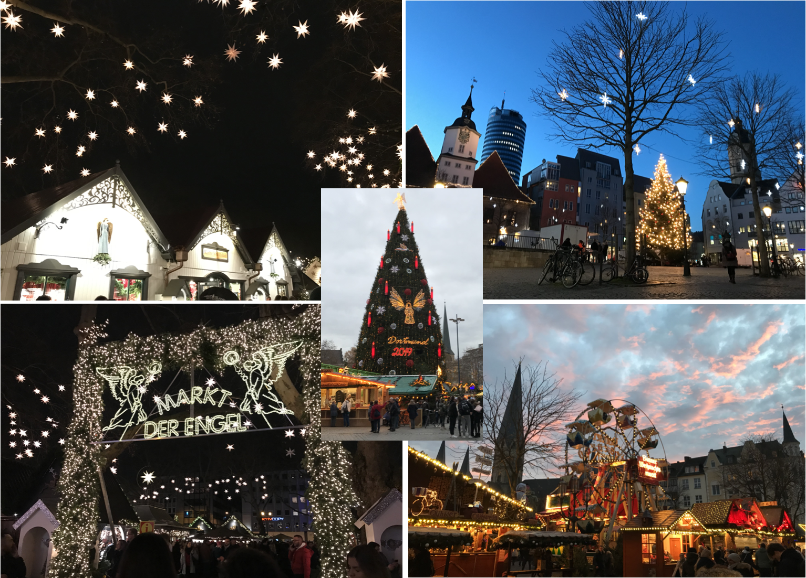

The Lingering Fragrance of Christmas 聖誕節的馨香之氣
Posted on 28 December, 2025
九年前，我第一次見識到真正的耶誕市集。 那裡有許多平時難得一見的美味：盛在精緻玻璃杯中的熱葡萄酒（Glühwein），溫熱的酒香混著果香與肉桂氣息；以及外酥內軟、金黃誘人的炸馬鈴薯餅（Kartoffelpuffer）。 在德東還會有來自匈牙利的蘭戈斯（Lángos），一種以發酵麵團油炸而成的扁圓形麵餅，上面通常會鋪滿大蒜醬、酸奶油和起司，鹹香可口。
後來的每一年，只要走到市中心，我總會順道繞去市集，讓那迷人的香味與繽紛的燈飾陪我走上一段路，感受節日特有的熱鬧與溫暖。 曾經與外國朋友一起搭火車去見識科隆大教堂旁的耶誕市集，光是那裡的氣氛和裝飾就讓人印象深刻。 曾經參與台灣同學會的聖誕活動，在市集裡分組去完成小組任務。 也曾經和學長相約在號稱有著世界最高聖誕樹（45公尺高）的Dortmund聖誕市集，邊聊著往事邊品嚐美味帶有蒜香的蘑菇。 還曾經和學校跑步班的同事們相約去逛市集，在寒風中啜飲熱紅酒，看著孩子們開心地享用難得的聖誕小吃。
今年我去了新北的耶誕市集，雖然少了往年在德國見識到的華麗和道地美食，卻在與教會朋友談天中意外地留下更深刻的感受。 原來真正令人眷戀的，並不是熱紅酒的甜香，也不是攤位上那些精巧的裝飾品，而是在談話與分享之間，那份被理解、被接住的感覺。 食物的香氣會在冷空氣裡漸漸散去，但人與人之間真誠交流所留下的馨香，卻能在心裡久久不散。

Nine years ago, I experienced a real Christmas market for the first time. There were flavors and scents rarely found elsewhere: steaming Glühwein served in delicate glass mugs, its warmth carrying notes of fruit and cinnamon, and crisp, golden Kartoffelpuffer, crunchy on the outside and tender within. In the eastern part of Germany, you might even find Lángos from Hungary—round flatbread made from fermented dough and fried to a light crisp, then spread with garlic sauce, sour cream, and cheese, savory and irresistible.
In the years that followed, whenever I found myself near the city center, I would take a short detour to the Christmas market. The inviting aromas and colorful lights always accompanied me for a while, wrapping me in the warmth and liveliness unique to the season. I once took a train with international friends to visit the Christmas market beside Cologne Cathedral, where the atmosphere and decorations alone were unforgettable. I once joined a Christmas event organized by the Taiwanese student association, completing small group missions scattered throughout the market. I once met up with a senior classmate at the Dortmund Christmas market, home to a Christmas tree said to be the tallest in the world at 45 meters, sharing memories while eating garlicky mushrooms straight from the pan. And I once went with colleagues from the university running club, sipping hot wine in the winter wind and watching children delight in the treats they only ever saw at Christmas.
This year, I visited the Christmas market in New Taipei. It lacked the grandeur and authentic treats I once experienced in Germany, yet a simple conversation with a friend from church left a far deeper impression than I expected. I realized that what lingers in memory is not the sweetness of mulled wine, nor the charming ornaments displayed at each stall, but the feeling of being understood and received in the quiet spaces between sharing and conversation. The fragrance of food eventually fades into the cold winter air, but the gentle “fragrance” of sincere connection between people remains, settling softly in the heart, long after the moment has passed.